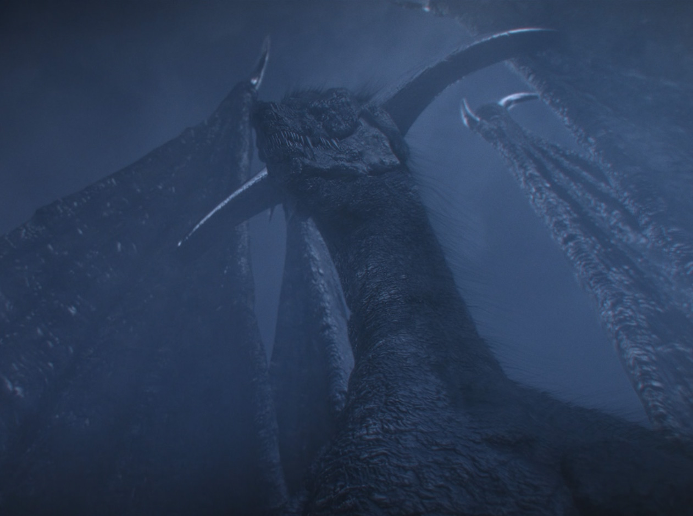
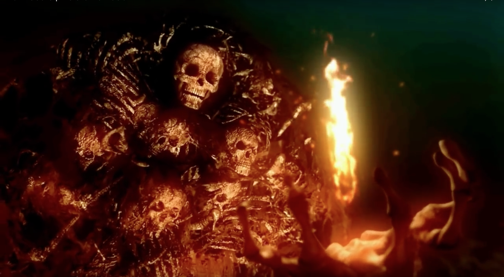
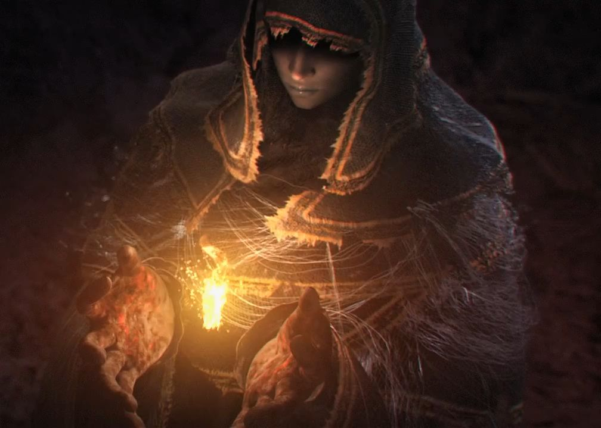
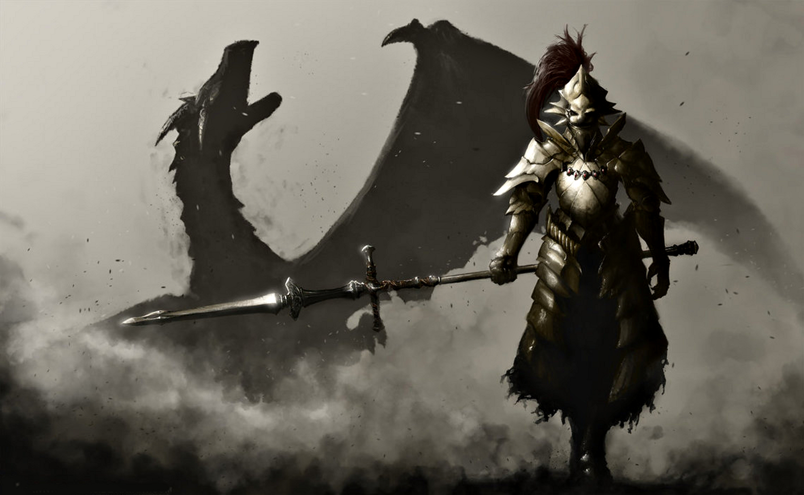
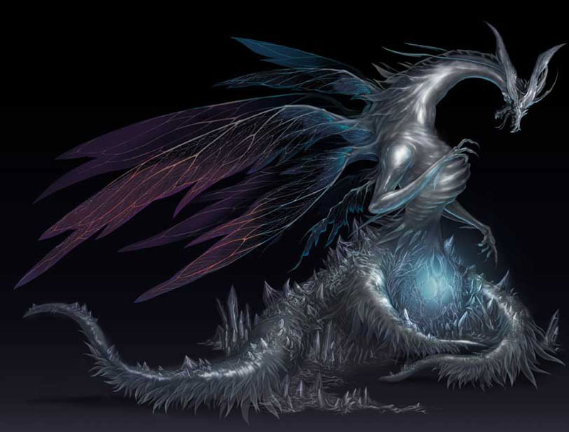
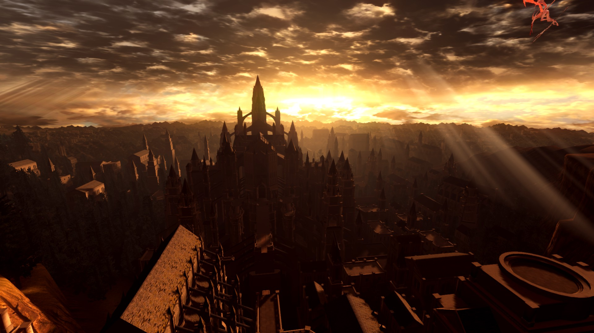
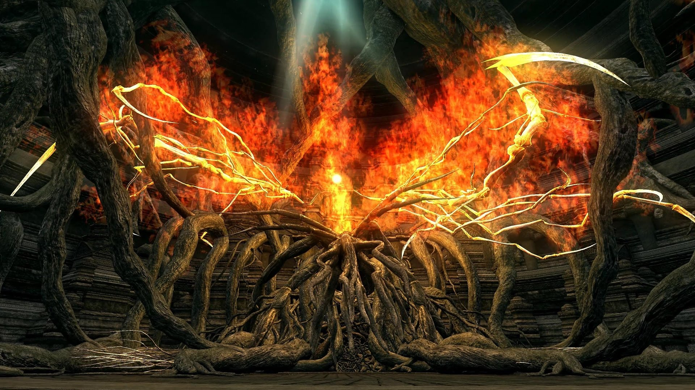
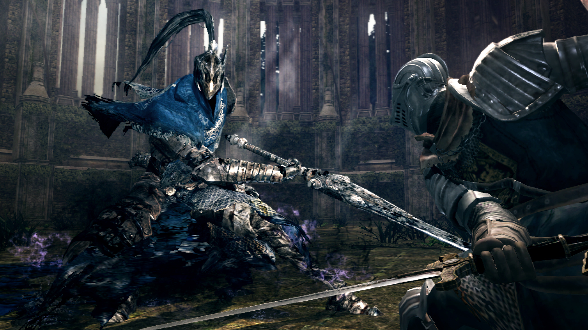
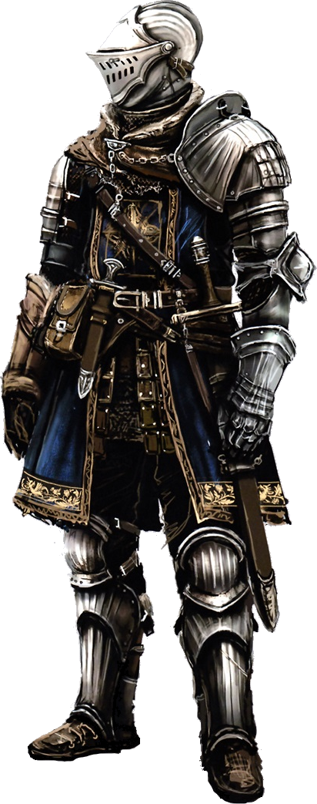

Dark Souls I & II
Dark Souls I & II
In the beginning of all time, the world was vast and gray and barren. Only the massive, stone-like arch-trees grew here, ascending high into the fog that shrouded the world. The rulers of this time were the dragons everlasting, whose stone scales granted them immortality. The dragons also held the primordial crystal, a powerful artifact, but we'll visit that another time.
Little is known about this period, only the most ancient of all things were around, and so it was called The Age of the Ancients.
It is a mystery from where Fire came. We only know that it suddenly came to be deep in the hollows of the world, raging brightly and hotly, bringing disparity into the cold and dark world. It is in this First flame, that the four souls of Lords are found. These souls are massively powerful. granting those that hold them god-like power, and thereby dominion in this new world.
One soul was found by Nito, the First of the Dead. Another was found by the
Which of Izalith, a powerful sorceress.
The third was  Gwyn, Lord of Sunlight. And the last came to the being known only as the
Gwyn, Lord of Sunlight. And the last came to the being known only as the  Furtive Pygmy, his soul weak and flickering unique to the rest.
Furtive Pygmy, his soul weak and flickering unique to the rest.
With the Lords leading the charge, a war was brought upon the dragons with the intention to usurp their hold over the land, sea, and air.
Gwyn used his power to harness the power of lightning, he and his loyal knights hurled massive bolts of lightning, peeling away the stone scales of the dragons, rendering them mortal. The Witch of Izalith, and her daughters of Chaos, used the Catalysts of Izalith, powerful artifacts and wove massive firestorms, burning the arch-trees, the homes of the dragons. Nito unleashed death and disease upon the dragons, and their bodies crumbled away in the miasma.
I should mention at this point, Seathe the Scaleless, an albino dragon born without the stone scales that granted immortality, betrayed his own kind and aided Gwyn in the war. While not immortal, Seathe was still very powerful and very wise, and he coveted the primordial crystal.
This "War of Fire" ended when finally the last dragon fell, and the Lords were triumphant. Taking their places as gods in the new world, they ushered in the Age of Fire, an age of prosperity, growth, and succor.
The Lords' domain came to be known as Lordran, the land of the Lords, and many human lands began to spring up and flourish around it. For many centuries, or perhaps even millennium, these civilizations grew, and the people loved and feared the Lords, who lived as gods in the city of Anor Londo.
All things, however, come to an end.
For reasons unknown to the Lords, their Souls began to dwindle in power, and the First Flame began to weaken. With the threat of Fire leaving the world, the Lords and the people begin to panic, terrified of returning to the Dark.
Witch of Izalith attempts to recreate the First Flame using powerful Sorcery, but fails and instead releases Fires of Chaos. These flames could not be controlled, and the Witch, her followers, and most of her children are consumed in this flame. The flames twisted the Witch and corrupted her completely, becoming the Bed of Chaos, the mother to all demons.
Gwyn attempts to aid Izalith in this cataclysm, but it soon becomes apparent that Izalith is lost, and his knights return with armor charred black, an ill omen for what is to come.
Finally conceding to what he sees as a final solution, Gwyn divides his power among his children, and leaves Anor Londo to link his soul to the First Flame, aptly located in the  Kiln of the First Flame, hoping to feed it, allowing the Light to last a little longer. Much of his army followed him here, and when the flame rekindled, they were burned to ashes, leaving behind only suits of armour that now wander the world.
Kiln of the First Flame, hoping to feed it, allowing the Light to last a little longer. Much of his army followed him here, and when the flame rekindled, they were burned to ashes, leaving behind only suits of armour that now wander the world.
For defying the coming Dark, Gwyn somehow proliferates the Undead Curse. It is not exactly clear how this curse came to be, but its effects are catastrophic. When one becomes Undead, they are marked by the accursed Darksign. Their bodies slowly decay, and upon death they are reborn from Bonfires, shrines to the First Flame. Slowly, over many deaths, Undead begin to Hollow, becoming more savage and less intelligent.
The people of the world almost universally feared and hated those cursed with undead and built an Asylum in the far North, where they sent the Undead to await the end of the world. It is here, a thousand years after Gwyn linked the First Flame, that the Chosen Undead is found, and the events of Dark Souls take place.